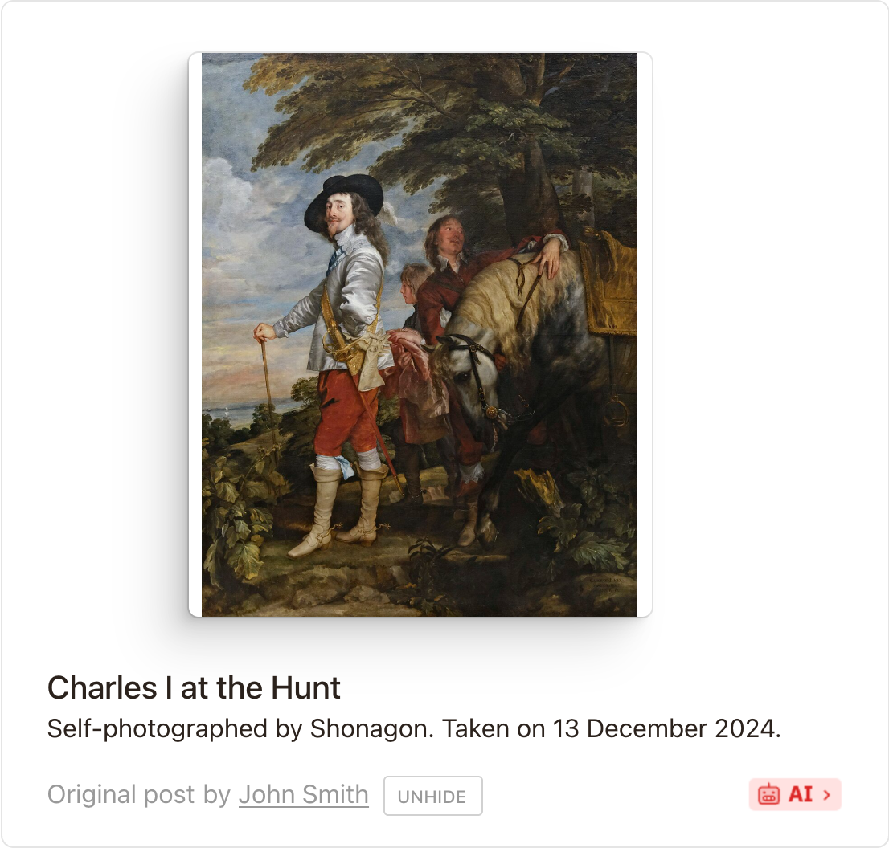

Image-card refinement · 75cea9d
Captured reference for the replacement-card visual baseline. The matching historical CSS is stored beside this file.

image-card-refinement-75cea9d.css
Captured reference for the replacement-card visual baseline. The matching historical CSS is stored beside this file.

image-card-refinement-75cea9d.css